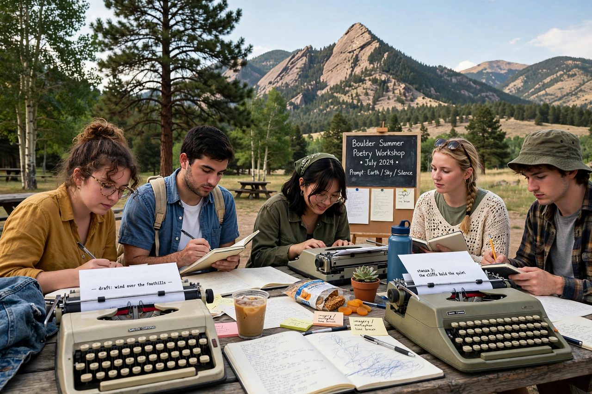

Jack Kerouac School of Disembodied Poetics
| Jack Kerouac School of Disembodied Poetics | |
|---|---|
 | |
| Established | 1974 |
| Parent institution | Naropa University |
| Location | Boulder, Colorado, United States |
| Founders | Allen Ginsberg, Anne Waldman |
The Jack Kerouac School of Disembodied Poetics is the writing and poetics programme of Naropa University in Boulder, Colorado. It was founded in 1974 by Beat poets Allen Ginsberg and Anne Waldman, and named for Jack Kerouac, the leading figure of the Beat Generation, whose spontaneous prose method shaped the school's ethos.
History
The school began as part of the Naropa Institute, founded by the Tibetan Buddhist teacher Chögyam Trungpa. Ginsberg and Waldman built a programme joining contemplative practice with experimental writing; the "disembodied" in the name nods both to Kerouac's ghostly posthumous presence and to the school's archive of recorded readings. Its celebrated Summer Writing Program has drawn visiting writers including William S. Burroughs, Gregory Corso, Diane di Prima and Peter Orlovsky.
Programmes
The school offers a BA in Creative Writing & Literature, an MFA in Creative Writing & Poetics, and a low-residency MFA. Its audio archive — thousands of hours of lectures and readings by visiting poets — is a major scholarly resource for post-war American poetry. The school publishes the literary journal Bombay Gin.